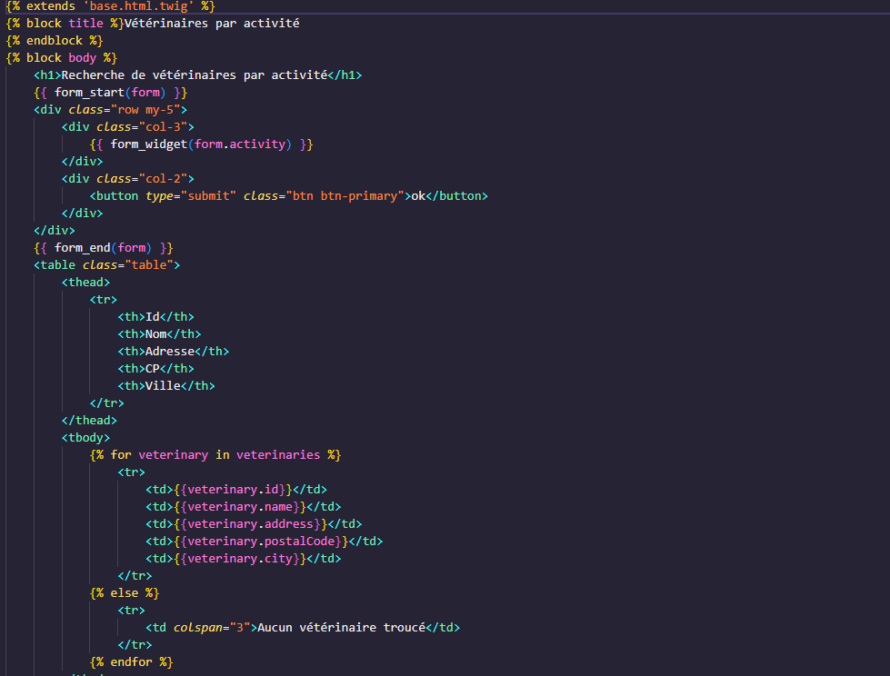

Projet Symfonny
-
Application web de gestion des relations avec les vétérinaires pour le
laboratoire GSB
- Architecture MVC
- Partiellement développée
-
Visiteur médical : chargé du suivi des vétérinaires et de la promotion
des produits vétérinaires
-
Manager : responsable de la gestion des produits et des vétérinaires
-
Administrateur : gestion complète des utilisateurs et des droits
d'accès
- Suivi régulier des vétérinaires pour répondre à leurs besoins
- Fixation d'objectifs commerciaux sur les produits vétérinaires
- Historisation des objectifs commerciaux sur plusieurs années
- Catégories de vétérinaires et gestion de ces catégories
-
Visiteurs médicaux : Suivi des vétérinaires, promotion
des produits et fixation des objectifs commerciaux
-
Manager : Gestion des produits, objectifs et
vétérinaires, avec modification des données et consultation des
rapports
-
Administrateur : Gestion des utilisateurs, de leurs
rôles, et des permissions d'accès
-
Historisation des objectifs commerciaux par vétérinaire et produit
- Possibilité de filtrer les objectifs par vétérinaire et année
- Mise à jour régulière des objectifs avec gestion de l'année
-
Authentification Symfony avec rôles utilisateur (ROLE_USER,
ROLE_MANAGER, ROLE_ADMIN)
- Gestion de la sécurité des accès et de l'authentification
- Respect des normes de développement web avec Symfony
- Programmation orientée objet et gestion des exceptions
Page accueil

Page d'affichage'

Page de details

Veterinaire par activité

Arborescence

Compétences :
- ▸Recenser et identifier les ressources numériques
- ▸Exploiter des référentiels, normes et standards adoptés par le prestataire informatique
- ▸Mettre en place et vérifier les niveaux d’habilitation associés à un service
- ▸Vérifier le respect des règles d’utilisation des ressources numériques
- ▸Analyser les objectifs et les modalités d’organisation d’un projet
- ▸Planifier les activités
- ▸Évaluer les indicateurs de suivi d’un projet et analyser les écarts
- ▸Mettre en place son environnement d’apprentissage personnel
×